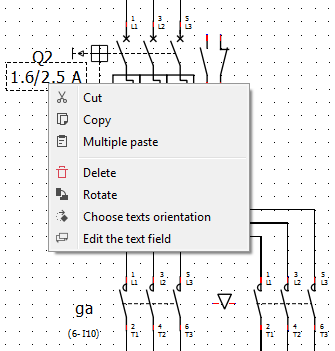

Working with tables¶
QElectorTech 0.7 does not have any tool or Menu item which creates automatically tables with the number of rows and columns desired. QElectroTech allows importing html text, this is the way to create tables.
Select icon Add textfield
from the toolbar.
Click on the area from the workspace where the table should be created.
Right click on text field and choose Edit the text field item from the menu.
Figure: QElectroTech text field option
Choose the source tab from the text field editor.

Figure: Source tab text field editor
- Copy the ‘html’ code generated by the HTML Table Generator.
- Choose the Rich Text tab from the text field editor.

Figure: Rich text tab text field editor
- Fill the headers and cells with the corresponding information.
- Press OK button and the table will be created at the workspace.
Note
If the toolbar is not displayed, it can be displayed from Settings > Display > Add.
The table can be moved and rotated over the folio area like a text field, it is a text field object.
Note
Many different HTML Table Generator can be found on interned or can be installed at the computer. One internet example is the following: